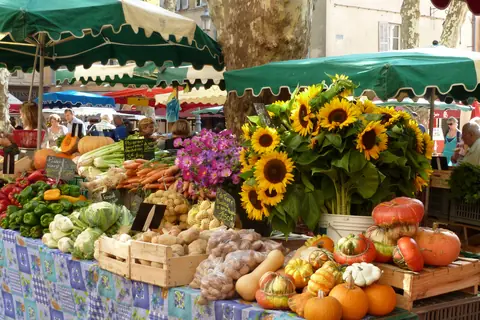

{kind=link}

Carrières des Lumières
알피유 한복판의 거대한 카리에르 데 뤼미에르는 세계에서 유일한 멀티미디어 쇼를 연다.
우제스의 첫 정착은 1세기로 거슬러 올라간다. 님으로 물을 보내는 로마 수도교 퐁 뒤 가르가 근처에 지어지면서 우제스와 님이 함께 번성했다. 1088년 크뤼솔 다제스 가문에 '세뇌르 다제스' 칭호가 주어졌고, 이후 자작·백작을 거쳐 1565년 마침내 공작이 됐다.
우제스는 가르 데파르트망에 있어 프로방스 서쪽, 공식적으로는 옥시타니에 속한다. 석회암은 꿀빛이고 덧창은 바랜 파스텔이며 자갈길은 차가 다니지 않고 조용하다. 상상하던 프로방스 그대로인데 인파와 관광버스만 없다.
님에서 35분, 아비뇽에서 45분, 몽펠리에에서 약 1시간이다. 구시가지 외곽 순환로에 주차하고 걸어 다닐 수 있다. 중세 중심가는 차량 통행이 막혀 있고, 그것이 이 도시가 여전히 제 모습인 이유다.
토요시장 정보는 장소 이해용으로 보존한다. 이번 방문에서는 Place aux Herbes의 아케이드·카페·생활상점과 구시가지 구조를 본다.
| 운영시간 | 상시 개방 (시간 제한 없음) |
|---|---|
| 휴무 | 마을·구시가지는 연중 개방 (Place aux Herbes 아케이드·골목·Tour Fenestrelle) |
| 예약 | 재확인 |
| 소요시간 | 95분 재확인 |
| 메모 | 장은 수·토 오전만 선다 — 방문일 9/18(금)에는 시장이 없다. 무료 셔틀(Mayac↔시내)도 토요일 오전만 운행한다. |
| 항목 | 값 |
|---|---|
| 시장 | 토 7:30–13:00 · Place aux Herbes |
| 주차 | 구시가지 외곽 순환로 |
| 아비뇽에서 | 약 45분 |
| ⚠ | 우제스 시장·주차와 Pont du Gard 운영(9월 09:00–19:00 (매표 18:30 마감))은 전날 재확인 |
플라스 오 제르브는 구시가지의 심장이며 남프랑스에서 가장 아름다운 시장 광장 중 하나다. 수백 년 된 석회암 아케이드가 둘러싸고, 거대한 플라타너스가 그늘을 드리우며, 의도적으로 느긋한 속도로 운영되는 카페들이 늘어서 있다.
알피유 한복판의 거대한 카리에르 데 뤼미에르는 세계에서 유일한 멀티미디어 쇼를 연다.

생폴드모졸 바로 옆의 갈로로마 도시 유적이다.

석회암 바위산 위의 요새 마을이다.

아비뇽의 실내 중앙시장이다.

1273년부터 교황들은 로마에서 안전하지도 자유롭지도 독립적이지도 못하게 되자 그곳을 떠났다.

전설에 따르면 12세기에 비바레 출신의 젊은 목동 베네제가 신의 명령으로 다리를 지었다.